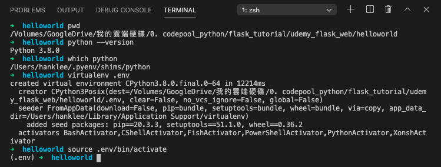
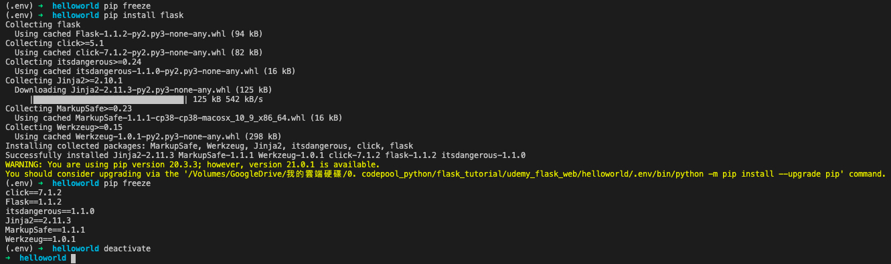

1 Python Environmental Setting
- 要開始用python前，我們要先學如何安裝python
- 對我的mac來說(對linux應該也是)，系統其實有預先安裝python了，只是是2.0的版本，並不適合使用。可以在terminal中輸入
python --version來查看
- 那我是用
pyenv這個python版本管理工具，來進行python的安裝
- 他的好處是，有一個統一的架構，可以安裝各種版本的python。並視專案的需要，可以輕鬆切換不同版本的python來使用
- 那就先整理：
- OS 為 mac, terminal為zsh
- 安裝方式為透過
pyenv來安裝
- OS 為 mac, terminal為zsh
- 至於其他作業系統(e.g. Linux, Windows)，或其他安裝方式(e.g. 直接安裝python, 透過anaconda安裝…)，就留待之後有空再整理
- 以下會整理我實際的操作步驟，至於細節，可以到
pyenv的官網去看: https://github.com/pyenv/pyenv
1.1 [mac + zsh shell] 用pyenv，安裝/切換 python
1.1.1 先安裝pyenv
- 首先，在mac上，用homebrew來下載
pyenv這個套件
brew update
brew install pyenv- 安裝完成後，確認一下目前根目錄下，有沒有
.zshrc這個檔案
open ~/.zshrc- 應該是會有拉。如果沒有的話，就新增這個檔
touch ~/ .zshrc- 然後，在terminal輸入以下指令：
echo -e 'if command -v pyenv 1>/dev/null 2>&1; then\n eval "$(pyenv init -)"\nfi' >> ~/.zshrc- 其實上面這行，等價於你先打開.zshrc檔(i.e.
open / .zshrc)，然後在”最下面”，加入以下指令：
if command -v pyenv 1>/dev/null 2>&1; then
eval "$(pyenv init -)"
fi這個指令的重點就是，
eval "$(pyenv init -)"，用意是Addpyenv initto your shell to enable shims and autocompletion。那每次我們開shell時，他都會幫我們執行pyenv init，那使用python時，就會到pyenv指定的路徑找python，而不會找到系統版的python(2.x.x版)restart shell，讓設定生效
1.1.2 安裝指定版本的python
- 在terminal中輸入以下指令
pyenv install 3.8.0- (Todo: 去確認reticulate網頁，我記得要讓R可以用的話，pyenv install 3.8.0後面還要加argument才行)
- 安裝完成後，確認現在pyenv有哪些版本：
pyenv versions- 有加
*的，表示目前正在使用的版本
1.1.3 切換/指定 要使用的python的版本
- 先學這個簡單的就好，我們用以下指令來指定我要用的版本：
pyenv global 3.8.0- 那確定一下有切換過去：
pyenv versions- 並用系統指令再確認一下，現在在用的版本
python --version # 看正在使用的python的版本
which python # 看使用的python的路徑1.1.4 先用terminal快速執行一個.py檔
- 確認沒問題後，我們在桌面新增這個
myfirstpython.py檔案
# myfirstpython.py
print("Hello Python")- 然後，在terminal輸入以下指令，即可執行：
python myfirstpython.py- 前面的
python，他就會去找現在路徑底下的python，也就是which python的這個python
- 後面的
myfirstpython.py，他是去找現在工作目錄下的這個.py檔，也就是pwd下的myfirstpython.py
- 所以，也可以給絕對路徑，來執行.py檔：
/Users/hanklee/.pyenv/shims/python /Users/hanklee/Desktop/myfirstpython.py1.1.5 pyenv 常用命理整理
1.1.5.1 Python配置
# 檢視系統當前安裝的python列表
pyenv versions
# 列出可安裝版本
pyenv install --list
# 安裝指定版本 Python
pyenv install -v 3.5.1
# 解除安裝指定版本 Python
pyenv uninstall 2.7.3
# 顯示當前python安裝路徑
pyenv which python
# 建立墊片路徑
# 為所有已安裝的可執行檔案建立 shims
# 如：~/.pyenv/versions/*/bin/*
# 每當你增刪了 Python 版本或帶有可執行檔案的包（如 pip）以後，都應該執行一次本命令
pyenv rehash1.1.5.2 Python 切換
# 設定全域性的 Python 版本，通過將版本號寫入 ~/.pyenv/version 檔案的方式
pyenv global <版本號>
# 設定面向程式的本地版本，通過將版本號寫入當前目錄下的 .python-version 檔案的方式。通過這種方式設定的 Python 版本優先順序較 global 高。
# pyenv 會從當前目錄開始向上逐級查詢 .python-version 檔案，直到根目錄為止。若找不到，就用 global 版本。
pyenv local <版本號>
# 設定面向 shell 的 Python 版本，通過設定當前 shell 的 PYENV_VERSION 環境變數的方式。這個版本的優先順序比 local 和 global 都要高。
pyenv shell <版本號>
# --unset 引數可以用於取消當前 shell 設定的版本。
pyenv shell --unset1.4 用pip安裝/移除/條列套件
- pip本身就是個python的package，他的用途是協助安裝python的第三方package
- 從python 3.4以後，只要安裝python，就會幫你安裝pip這個package，但版本可能比較低，所以還要自己更新
- 整理常用的指令如下：
# 先確認版本已是最新版
pip install --upgrade pip
# 安裝套件
pip install flask
sudo pip install flask # linux
# 移除套件
pip uninstall flask
# 觀看目前所有安裝過的套件
pip freeze- 這邊特別注意最後一個指令
pip freeze，他列出所有目前安裝過的套件與版本號，這對reproducible research很有用
1.5 requirements.txt
- 假設現在我們用python開發了一個package，而開發過程中，我陸續安裝了很多package來搭配使用，那，當別人用我的package時，他也需要安裝我曾經安裝過的這些packages，才能正常使用
- 那這時就可以這樣做：
# 將目前系統有安裝過的python package條列出
# 存成requirement.txt，提供給別人
pip freeze >> requirement.txt
# 別人只要下載你的requirement.txt
# 並執行以下指令即可reproduce你用的套件版本
pip install -r requirements.txt- 所以，我們如果去github看人家python的專案，例如ansible/ansible這個專案，就可以看到他有附”requirements.txt”這個檔案
1.6 用virtualenv來隔離乾淨的開發環境
- 剛剛用”requirements.txt”來解決package和版本問題，似乎很方便，但其實很多小問題在裡面
- 例如，你的python從安裝開始，到你開發結束，早就安裝一堆package了，其中很多package是和你的專案無關的，但你用
pip freeze就只能全抓
- 我們常常不只開發一個專案，有可能當我們開發專案A時，install了flask，然後當我們開發專案B時，又install了flask，而這兩個flask的版本是不同的。假設前者的版本是flask 1.1.0，後者是flask 1.2.0，那當我們用
pip freeze時，他只會保留最新的，也就是flask 1.2.0，那…就有可能在re-run A專案時，遇到bug，因為flask的版本已經不一樣了
- 例如，你的python從安裝開始，到你開發結束，早就安裝一堆package了，其中很多package是和你的專案無關的，但你用
- 為了解決這個問題，python的熟手，都是習慣每個專案擁有自己的虛擬環境(virtual environment)，那我的package就裝在自己的虛擬環境中，到時候要打包，要freeze灌過的package給人家，就直接在這虛擬環境中下指令就好
1.6.1 用terminal，透過virtualenv()來開虛擬環境
- 我直接用flask課堂上的專案來做舉例
- 首先，我開啟VSCode，用他的terminal功能，把工作目錄，切到以下路徑：
/Volumes/GoogleDrive/我的雲端硬碟/0. codepool_python/flask_tutorial/udemy_flask_web/helloworld
- 並且確認一下當前使用的python版本，與python路徑
- 然後執行以下兩個指令，來建立並進入虛擬環境
- 首先，我開啟VSCode，用他的terminal功能，把工作目錄，切到以下路徑：
# 在當前目錄下，建立一個虛擬環境資料夾，叫`.env`
# (要不要加`.`都無所謂，你要寫`env`或`hahaha`都可以)
virtualenv .env
# 進入此虛擬環境
source .env/bin/activate- 截圖如下：

- 進入虛擬環境後，我們可以用
pip freeze觀察，目前已經安裝哪些套件了，結果發現啥都沒有(合理嘛)
- 然後安裝flask後(
pip install flask)後，再觀察一次pip freeze，就看到已經安裝許多東西進去了
- 我們可以用
pip freeze >> requirement.txt把這個結果寫出來
- 最後，要離開時，再key入
deactivate，就跳出此虛擬環境了。
- 截圖如下：

1.6.2 用terminal，透過pyenv-virtualenv來開虛擬環境
- 這邊還沒用過，我從此網頁把操作流程copy下來，他整理的蠻清楚的。
- pyenv-virtualenv 是 pyenv 下基於 virtualenv 的一款外掛，通過 pyenv-virtualenv 外掛可以很好的和 virtualenv 結合。
1.6.2.1 安裝
- 使用 homebrew 安裝
pyenv-virtualenv:
brew install pyenv-virtualenv- 安裝之後需要執行如下配置：
# 使用 zsh shell
vim ~/.zshrc
# 使用系統預設
vim ~/.bash_profile
# 在 `.zshrc` 或 `.bash_profile` 檔案最後寫入：
# pyenv-virtualenv
if which pyenv-virtualenv-init > /dev/null;
then eval "$(pyenv virtualenv-init -)";
fi
# 使配置生效
source ~/.zshrc
# or
source ~/.bash_profile